지적기사 (2014-05-25 기출문제)
1과목: 지적측량
1. 전파기 또는 광파기측량방법에 따라 다각망도선법으로 지적삼각보조점측량을 할 때 기지점과 교점을 포함하여 1도선의 점의 수는 몇 점 이하로 하여야 하는가?
- 5점 이하
- 10점 이하
- 15점 이하
- 20점 이하
(정답률: 70%)

2. 지적삼각보점측량의 방법 및 기준으로 틀린 것은?
- 광파기측량방법에 따라 교회법으로 지적삼각보점측량을 할 때에 삼각형의 각 내각은 30° 이상 120° 이하로 한다.
- 전파기 또는 광파기 측량방법에 따라 다각망도선법으로 지적삼각보점측량을 할 때 1도선의 거리는 4km이하로 한다.
- 2방향의 교회법으로만 실시하여야 한다.
- 지적삼각보점은 교회망 또는 교점다각망으로 구성하여야 한다.
(정답률: 75%)
3. 삼각형의 순서에 따라 산출하는 임의의 변의 길이는 계산 경로와 관계없이 모두 일치하도록 오차를 조정하여 배부 하는 것은?
- 변규약
- 삼각규약
- 망규약
- 측참규약
(정답률: 63%)
4. 지적측량에서는 지구의 표면을 평면으로 정하는 투영식을 어느 방법으로 표시힘을 기준으로 하는가?
- 가우스법
- 가우스쿠르거법
- 벳셀법
- 가우스상사이중투영법
(정답률: 86%)
5. 경위의측량방법에 따른 세부측량의 기준이 옳은 것은?
- 거리측정단위는 0.01cm로 한다.
- 관측은 30초독 이상의 경위를 사용한다.
- 수평각의 관측은 1대회의 방향관측법이나 2배각의 배각법에 따른다.
- 경계점의 점간거리는 1회 측정한다.
(정답률: 64%)
6. 4상한의 θ각이 38° 19′ 20″일 때 방위각은 얼마인가?
- 141° 40′ 40″
- 321° 40′ 40″
- 308° 19′ 20″
- 338° 19′ 20″
(정답률: 74%)
7. 토탈스테이션을 이용한 작업의 장점으로 가장 거리가 먼 것은?
- 각과 거리를 동시에 측정할 수 있다.
- 전자기록 장치를 사용할 수 있어 작업 효율이 높다.
- 날씨나 장애물의 영향을 받지 않아 항상 작업이 가능하다.
- 측정에 있어 사용자에 따른 눈금읽기 오차로 인한 실수를 피할 수 있다.
(정답률: 85%)
8. 다음 도형의 면적은 얼마인가? (단, α= 58° 40′ 50″,
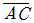
= 64.85m,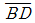
= 59.60m)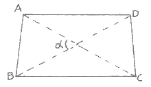
- 20⑤.4m2
- 1950.9m2
- 18⑤.4m2
- 1650.9m2
(정답률: 57%)
9. 축척 1/1200 지역 토지의 면적을 전자면적계로 2회 측정한 결과가 각 138232m2, 138347m2 이었을 때 처리방법으로 옳은 것은?
- 작은 면적을 측정면적으로 한다.
- 큰 면적으로 측정면적으로 한다.
- 평균치를 측정면적으로 한다.
- 재측량하여야 한다.
(정답률: 78%)
10. 다음 그림에서
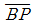
의 계산식으로 옳은 것은?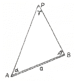
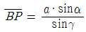
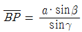
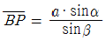
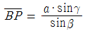
(정답률: 67%)
11. 지적측량성과와 검사 성과의 연결교차 허용범위 기준이 틀린 것은?
- 지적삼각점 : 0.20m
- 지적삼각보조점 : 0.50m
- 지적도근점(경계점좌표등록부 시행지역) : 0.15m 이내
- 경계점(경계점좌표등록부 시행지역) : 0.10m 이내
(정답률: 88%)
12. 평판측량방법에 따른 세부측량을 방사법으로 하는 경우, 광파조준의를 사용할 때에는 1방향선의 도상길이를 얼마 이하로 할 수 있는가?
- 10cm
- 15cm
- 20cm
- 30cm
(정답률: 53%)
13. 지적측량 시행규칙에 따른 지적기준점측량의 절차가 옳은 것은?
- 계획 → 답사 → 관측 → 선점 및 조표
- 계획 → 선점 및 조표 → 답사 → 관측
- 계획 → 관측 → 선점 및 조표 → 답사
- 계획 → 답사 → 선점 및 조표 → 관측
(정답률: 68%)
14. 아래 그림에서 ℓ의 길이는 얼마인가? (단, L = 10m, θ = 75° 45′ 26.7″)
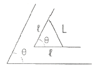
- 4.35m
- 6.29m
- 8.14m
- 9.42m
(정답률: 61%)
15. 실제면적인 900m2 일 때 1/600 축척에서의 도상면적은?
- 17cm2
- 25cm2
- 54cm2
- 90cm2
(정답률: 71%)
16. 경위의측량방법과 다각망도선법에 따른 지적도근점의 관측에서 시가지 지역, 축척변경지역 및 경계점좌표등록부 시행 지역의 수평각 관측방법은?
- 방향각법
- 교회법
- 방위각법
- 배각법
(정답률: 71%)
17. 지적삼각점측량의기초가 되는 것으로만 나열된 것은?
- 삼각점, 지적삼각보조점
- 지적삼각점, 지적삼각보조점
- 삼각점, 지적삼각점
- 지적삼각보조점, 통합기준점
(정답률: 69%)
18. 다음 중 오차의 성격이 다른 하나는?
- 수준척(staff) 눈금의 오독으로 인해 생기는 오차
- 기포의 둔감에서 생기는 오차
- 각관측에서 시준점의 목표를 잘못 시준하여 생기는 오차
- 야장의 기입 착오로 생각는 오차
(정답률: 84%)
19. 점 P에서 방위각이 β인 직선
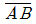
까지의 수선장 d를 구하는 식은?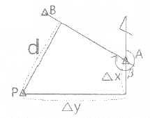
- d = △x·cosβ - △y·sinβ
- d = △y·cosβ - △x·sinβ
- d = △x·sinβ - △y·cosβ
- d = △y·sinβ - △x·cosβ
(정답률: 62%)
20. 지적도근점측량에서 측정한 각 측선의 수평거리의 총합계가 1550m 일 때, 연결오차의 허용범위 기준은 얼마인가? (단, 경계점좌표등록부를 갖춰 두는 지역이며 2등 도선이다.)
- 19cm 이하
- 29cm 이하
- 39cm 이하
- 59cm 이하
(정답률: 49%)
2과목: 응용측량
21. 시속 720km, 고도 3000m, 렌즈의 초점거리 150mm 허용흔들림이 0.02mm일 때 최장노출시간은?
- 1/100초
- 1/250초
- 1/500초
- 1/1000초
(정답률: 62%)
22. 사진측량에서 절대표정에 대한 설명으로 옳은 것은?
- 정준 조정
- 시차 조정
- 사진중심 조정
- 축척과 경사 조정
(정답률: 40%)
23. 곡선반지름 R=80m, 곡선길이 L=20m일 때 클로소이드의 매개변수 A의 값은?
- 40m
- 60m
- 100m
- 160m
(정답률: 71%)
24. 평지에 있는 언덕의 높이는 200m 이고 이때 항공사진을 촬영하기 위한 비행고도가 3000m이다. 사진 상에서 지상변위의 최대값은? (단, 항공사진 1장의 크기는 23cm × 23cm 이다.)
- 7.67mm
- 10.84mm
- 15.33mm
- 21.68mm
(정답률: 52%)
25. 직접수준측량에서 2km를 왕복하는데 오차가 ±4mm 발생하였다면 이와 같은 정밀도로 하여 4.5km를 왕복했을 때의 오차는?
- ±5.0mm
- ±5.5mm
- ±6.0mm
- ±6.5mm
(정답률: 54%)
26. 원격탐사의 특성에 대한 설명으로 옳지 않은 것은?
- 관측 자료의 판독은 자동적이나 정량화가 불가능하다.
- 짧은 시간에 넓은 지역을 동시에 측정할 수 있다.
- 얻어진 영상은 정사투영에 가깝다.
- 반복 측정이 가능하다.
(정답률: 64%)
27. 다음 중 원격탐사에 사용되는 전자 스펙트럼에서 가장 파장이 긴 것은?
- 자외선
- 초록색
- 노랑색
- 적외선
(정답률: 72%)
28. 축척 1:50000의 지형도에서 A의 표고가 235m이고, B의 표고가 563m일 때 지형도 상에 주곡선 간격의 등고선을 몇 개 삽입할 수 있는가?
- 13
- 15
- 17
- 18
(정답률: 73%)
29. GPS에서 이중차분법(Double Differencing)에 대한 설명으로 옳은 것은?
- 이중차는 2개의 단일차의 합이다.
- 이중차는 여러 에포크에서 2개의 수신기로 추적 되는 1개의 위성을 포함한다.
- 이중차는 여러 에포크에서 1개의 수신기로 추적 되는 2개의 위성을 포함한다.
- 동시에 2개 위성을 추적하는 2개의 수신기는 이중차 관측이다.
(정답률: 71%)
30. 터널의 시점(P)과 종점(Q)의 좌표가 P(1200, 800, 75), Q(1600, 600, 100)로 터널을 굴진할 경우 경사각은? (단, 좌표단위 : m)
- 2° 11′ 59″
- 2° 13′ 19″
- 3° 11′ 59″
- 3° 13′ 19″
(정답률: 63%)
31. 노선측량 중 공사측량에 속하지 않는 것은?
- 용지측량
- 토공의 기준틀 측량
- 주요말뚝의 인조점 설치 측량
- 중심말뚝의 검측
(정답률: 67%)
32. 그림과 같이 곡선중점(E)을 E′로 이동하여 교각의 변화 없이 신곡선을 설치하고자 한다. 신곡선의 반지름은?
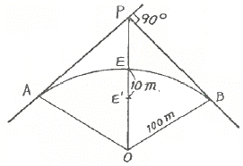
- 68m
- 90m
- 124m
- 200m
(정답률: 47%)
33. 경사면 AB, BC에 따라 거리를 측정하여 AB=21.562m, BC=28.064m를 얻었다. 1측점에서 레벨을 설치하여 A, B, C 상에 표척을 세워 아래와 같이 얻었을 때 AC의 수평거리는?
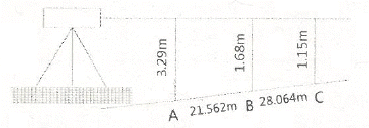
- 49.6m
- 50.1m
- 59.6m
- 60.1m
(정답률: 61%)
34. 그림에서 삼각형
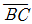
와 평행하게 m : n = 1 : 4의 비율로 분할하고자 할 경우, AB=75m일 때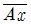
의 거리는?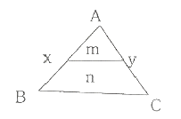
- 15.0m
- 18.8m
- 33.5m
- 37.5
(정답률: 59%)
35. 원심력에 의한 곡선부의 차량탈선을 방지하기 위하여 곡선부의 횡단 노면 외측부를 높여주는 것은?
- 확폭
- 캔트
- 종거
- 완화구간
(정답률: 72%)
36. 기복변위와 경사변위를 모두 제거한 사진으로 옳은 것은?
- 엄밀수직사진
- 엄밀수평사진
- 정사사진
- 사진집성도
(정답률: 58%)
37. 일반적으로 터널을 설치하는 것이 유리한 경우로 옳지 않은 것은?
- 절취깊이가 10m 미만인 경우
- 지질이 좋지 못하여 절취면의 유지가 곤란한 경우
- 경제적 여건을 고려하여 터널의 설치가 유리한 경우
- 지질이 좋지 않아 절취면의 보수 작업이 곤란한 경우
(정답률: 56%)
38. 현장에서 수준측량을 정확하게 수행하기 위해서 고려해야할 사항이 아닌 것은?
- 전시와 후시의 거리를 동일하게 한다.
- 기포가 중앙에 있을 때 읽는다.
- 표척이 연직으로 세워졌는지 확인한다.
- 레벨의 설치 횟수를 홀수회로 끝나도록 한다.
(정답률: 83%)
39. 1:50000 지형도에서 제한경사 5%의 노선을 산정하기 위한 주곡선 간의 도상 거리는?
- 4mm
- 8mm
- 10mm
- 15mm
(정답률: 43%)
40. GPS를 구성하는 위성의 궤도 주기로 옳은 것은?
- 약 6시간
- 약 12시간
- 약 18시간
- 약 24시간
(정답률: 74%)
3과목: 토지정보체계론
41. OGC(Open GIS Consortium, 또는 Open Geodata Consortium)에 대한 설명으로 틀린 것은?
- OGIS(Open GIS)를 개발하고 추진하는데 필요한 합의된 절차를 정립할 목적으로 비영리의 협회형태로 설립되었다.
- 지리정보를 활용하고 관련응용분야를 주요 업무로 하고 있는 공공기관 및 민간기관으로 구성된 컨소시움이다.
- 지리정보와 관련된 여러 처리방식에 대하여 개방형 시스템적인 접근을 시도하였다.
- 지리정보를 객체지향적으로 정의하기 위한 명세서라 할 수 있다.
(정답률: 55%)
42. 데이터베이스의 구축과정 중 파일의 위치, 색인(Index) 방법과 같은 물리적 구조를 설계하는 단계는?
- 데이터베이스 정의 단계
- 데이터베이스 생성 계획을 수립하는 단계
- 데이터베이스를 관리하고 조작하는 단계
- 데이터베이스를 저장하는 방법에 대해 정의하는 단계
(정답률: 36%)
43. 계급형(Hierarchical) 데이터베이스 모델에 관한 설명으로 틀린 것은?
- 이해와 갱신이 용이하다.
- 각각의 객체는 여러 개의 부모 레코드를 갖는다.
- 모든 레코드는 일 대 일(1:1) 혹은 일 대 다수(1:n)의 관계를 갖는다.
- 키필드가 아닌 필드에서는 검색이 불가능하다.
(정답률: 48%)
44. 지적전산자료에 오류가 발생한 때의 정비내역은 몇 년간 보관하여야 하는가?
- 2년
- 3년
- 5년
- 영구
(정답률: 65%)
45. 필지중심토지정보시템의 구성체계 중, 지적측량업무를 지원하는 시스템으로서 지적측량업무의 자동화를 통하여 생산성과 정확성을 높여주는 시스템은?
- 지적행정시스템
- 지적공부관리시스템
- 지적측량시스템
- 공간정보관리시스템
(정답률: 59%)
46. 지적업무의 정보화를 목표로 1977년부터 시작된 사전 기반조성 작업이 아닌 것은?
- 토지·임야대장 부책화
- 소유자 주민등록번호 등재 정리
- 지적 법령 정비
- 토지소유자의 유형별 구분 및 고유번호
(정답률: 35%)
47. 불규칙삼각망(TIN)에 관한 설명으로 틀린 것은?
- DEM과는 달리 추출된 표본 지점들은 x, y, z값을 갖고 있다.
- 벡터데이터모델로 위상구조를 가지고 있다.
- 표고를 가지고 있는 많은 점들을 연결하면 유일한 모양의 삼각망이 형성된다.
- 표본점으로부터 삼각형의 네트워크를 생성하는 방법으로 가장 널리 사용되는 방법은 델로니 삼각법이다.
(정답률: 54%)
48. 속성정보로 보기 어려운 것은?
- 공유지연명부의 등록사항인 토지의 소재
- 임야도의 등록사항인 경계
- 대지권등록부의 등록사항인 대지권 비율
- 경계점좌표등록부의 등록사항인 지번
(정답률: 65%)
49. 지적전산자료관리책인관이 대장전산자료의 이용실태를 확인하여야 하는 기간 기준은?
- 매일 1회 이상
- 매주 1회 이상
- 매월 1회 이상
- 매년 1회 이상
(정답률: 63%)
50. 한국토지정보시스템(KLIS)에 대한 설명으로 옳은 것은?
- 토지관련 정보를 공동 활용하기 위해 구축한 것이다.
- PBLIS와 LIS를 통합하여 구축한 것이다.
- 지하시설물 관리를 중심으로 구축한 것이다.
- 과거 행정안전부에서 독자적으로 구축한 시스템이다.
(정답률: 46%)
51. 지적전산자료의 사용료에 관한 설명으로 옳은 것은?
- 지적소관청의 승인을 거쳐 지적전산자료를 이용할 때는 사용료를 모두 면제 한다.
- 시·군·구 지적전산자료의 사용료는 현금으로만 납부한다.
- 인쇄물로 이용하는 경우 1필지당 30원, 전산매체에 의한 이용의 경우 1필지당 20원의 사용료는 현금으로만 납부 한다.
- 안전행정부장관이 제공하는 지적전산자료의 사용료는 수입증지로 납부한다.
(정답률: 58%)
52. 국가지리정보체계(NGIS) 구축 사업의 주요 추진전략이 아닌 것은?
- 범국가적 차원의 강력지원
- 국가공간정보기반의 확충 및 유통체계의 정비
- 공급 주체인 국가 중심의 서비스 극대화
- 국가와 민간시스템과의 업무 간 상호 협력체계 강화
(정답률: 45%)
53. 종이지적도를 디지타이저 장비를 이용하여 전산화할 때, 디지타이저 장비 중 마우스와 같은 기능을 하는 것은?
- Stick
- Punk
- Cable
- Tablet
(정답률: 58%)
54. 토지정보체계의 데이터베이스관리싯템을 구축하기 위한 논리적 데이터베이스 모형이 아닌 것은?
- 위상형 (topological)
- 관계형 (relational)
- 네트워크형 (network)
- 계층형 (hierarchical)
(정답률: 67%)
55. 래스터데이터의 구성 요소가 아닌 것은?
- 그리드 (grid)
- 점(point)
- 화소(pixel)
- 셀(cell)
(정답률: 72%)
56. 실세계를(GIS)의 데이터베이스로 구축하는 과정을 추상화 수준에 따라 분류할 때 이에 해당하지 않는 것은?
- 개념적 모델
- 논리적 모델
- 물리적 모델
- 수리적 모델
(정답률: 72%)
57. 토지정보체계에서 데이터베이스의 구축 시 발생하는 오차로 보기 어려운 것은?
- 데이터의 좌표 변환 시 사용하는 투영법에 따른 오차
- 원본 자료의 부정확성에 따른 오차
- 자료의 논리적 일관성에 따른 오차
- 데이터의 입력 과정에서 발생하는 오차
(정답률: 60%)
58. 데이터베이스에서 데이터의 표준 유형을 분류할 때 기능 측면의 분류에 해당하지 않는 것은?
- 데이터 표준
- 프로세스 표준
- 기술 표준
- 메타데이터 표준
(정답률: 71%)
59. 관계형데이터베이스를 위한 산업표준으로 대표적으로 사용되고 있는 언어는?
- 쿼리어(SQL)
- 조작어(DML)
- 제어어(DCL)
- 검색어(CQL)
(정답률: 77%)
60. 웹 기반의 토지정보체계(웹LIS)의 도입에 따른 기대 효과로 거리가 먼 것은?
- 시간과 거리의 제역을 받지 않는다.
- 신속하고 거리의 제약을 받지 않는다.
- 정보의 공유가 가능하다.
- 정보의 중앙 집중화를 실현할 수 있다.
(정답률: 77%)
4과목: 지적학
61. 다음 중 지목의 결정에 있어서 비슷한 규모의 도로와 철로가 교차하는 지점의 지목설정으로 가장 관련이 있는 것은?
- 주지목추종의 원칙
- 용도경중의 원칙
- 일필일목의 원칙
- 등록선후의 원칙
(정답률: 57%)
62. 다음 중 토렌스시스템의 기본이론인 거울이론에 대한 설명으로 옳은 것은?
- 토지권리증서의 등록은 토지의 거래 사실을 완벽하게 반영한다.
- 토지등록부는 매입신청자를 위한 유일한 정보이다.
- 선의의 제3자는 토지의 권리자와 동등한 입장에 놓여야 한다.
- 토지권리에 대한 사실심사 시 권리의 진실성에 직접 관여하여야 한다.
(정답률: 67%)
63. 다음 중 근대적 지적제도가 가장 빨리 시작된 나라는?
- 프랑스
- 독일
- 일본
- 대만
(정답률: 79%)
64. 조선시대의 토지제도에 대한 설명 중 옳지 않은 것은?
- 사표(四慓)는 토지의 위치로서 동·서·남·북의 경계를 표시한 것이다.
- 조선시대의 양전의 원칙적으로 20년 마다 한번 씩 실시하여 새로이 양안을 작성하게 되어 있다.
- 양안의 내용 중 시주(時主)는 토지의 소유자이고, 시작(時作)은 소작인을 나타낸다.
- 조선시대의 지번설정제도에 부번제도가 없었다.
(정답률: 72%)
65. 우리나라 법정 지목을 구분하는 중심적 기준은 무엇인가?
- 토지의 위치
- 토지의 용도
- 토지의 성질
- 토지의 지형
(정답률: 85%)
66. 결부제에 대한 설명으로 옳은 것은?
- 1척은 10파
- 100파는 1속
- 100속은 1부
- 100부는 1결
(정답률: 47%)
67. 다음 중 경국대전에 근거하여 토지를 매매할 때 소유권 이전에 관하여 관에서 증명한 소유권증서와 같은 문서는?
- 양안(量案)
- 입안(立案)
- 명문(明文)
- 문기(文記)
(정답률: 54%)
68. 토지조사사업 당시 토지의 사정이 의미하는 것은?
- 소유자와 강계를 확정하는 행정처분이다.
- 소유자와 지목을 확정하는 행정행위이다.
- 경계와 면적으로 확정하는 것이다.
- 지번, 지목, 면적으로 확정하는 것이다.
(정답률: 78%)
69. 다음 중 지적도에 건물이 등록되어 있는 국가는?
- 한국
- 일본
- 독일
- 대만
(정답률: 53%)
70. 오늘날 지적과 유사한 토지에 관하여 기록한 장부가 아닌 것은?
- 도적(圖籍)
- 판적(版籍)
- 장적(帳籍)
- 전적(田籍)
(정답률: 57%)
71. 지적제도에 대한 설명으로 가장 거리가 먼 것은?
- 효율적인 토지관리와 소유권 보호를 목적으로 한다.
- 국가의 행·재정적 필요에 의한 제도이다.
- 토지에 대한 물리적 현황의 등록·공시제도이다.
- 소유권 이외의 권리를 보호하기 위한 제도이다.
(정답률: 73%)
72. 다음 중 권원등록제도(registration of title)에 대한 설명으로 옳은 것은?
- 토지의 이익에 영향을 미치는 문서의 공적 등기를 보전하는 제도이다.
- 보험회사의 토지중개 거래제도이다.
- 소유권 등록 이후에 이루어지는 거래의 유효성에 대하여 정부가 책임을 지는 제도이다.
- 토지소유권의 공시보호제도다.
(정답률: 60%)
73. 다음 중 적극적 등록제도에 대한 설명으로 옳지 않은 것은?
- 토지등록상의 무제로 인한 피해로부터 선의의 제3자를 보호하기 위한 제도는 마련되어 있지 않다.
- 지적공부에 등록되지 아니한 토지는 어떠한 권리도 인정받지 못한다.
- 적극적 등록제도의 발달된 형태로 토렌스시스템(Torrens system)이 유명하다.
- 등록은 일필지의 개념으로 법적인 권리보장이 인증된다.
(정답률: 79%)
74. 지적의 구성요소를 외부요소와 내부요소로 구분할 때 내부요소에 속하지 않는 것은?
- 지적공부
- 지형
- 토지
- 경계설정
(정답률: 47%)
75. 지번의 결번(缺番)이 되는 원인이 아닌 것은?
- 토지조사 당시 지번 누락으로 인한 결번
- 토지의 등록전환으로 인한 결번
- 토지의 경계정정으로 인한 결번
- 토지의 합병으로 인한 결번
(정답률: 53%)
76. 지적공부에 대한 설명으로 옳은 것은?
- 토지대장은 국가가 작성하여 비치하는 공적장부를 말한다.
- 지적공부 중 대장에 해당되는 것은 토지대장, 임야 대장만을 말한다.
- 지적공부 중 도면에 해당되는 것은 지적도, 임야도, 도시계획도를 말한다.
- 경계점좌표등록부는 지적공부에 해당되지 않는다.
(정답률: 60%)
77. 다음 중 아래와 관련된 일필지의 경계설정 기준에 관한 설명에 해당하는 것은?
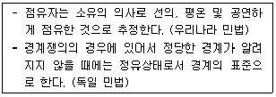
- 경계가 불분명하고 점유형태를 확정할 수 없을 때 분쟁지를 물리적으로 평분하여 쌍방의 토지에 소유시킨다.
- 현재 소유자가 각자 점유하고 있는 지역이 명확한 1개의 선으로 구분되어 있을 때, 이 선을 경계로 한다.
- 새로이 결정하는 경계가 다른 확실한 자료와 비교 하여 공평, 합당하지 못할 때에는 상당한 보완을 한다.
- 점유형태를 확인할 수 없을 때 먼저 등록한 소유자에게 소유시킨다.
(정답률: 69%)
78. 토지대장의 편성방법 중 현행 우리나라에서 채택하고 있는 방법은?
- 연대적편성주의
- 물적편성주의
- 인적평성주의
- 인적·물적편성주의
(정답률: 70%)
79. 지적에서 지번의 부번 진행 방법 중 옳지 않은 것은?
- 사행식(蛇行式)
- 기우식(奇偶式)
- 절충식(折衷式)
- 고저식(高底式)
(정답률: 68%)
80. 다음 중 토지조사사업 당시의 재결기관으로 옳은 것은?
- 지방토지조사위원회
- 임시토지조사국장
- 고등토지조사위원회
- 도지사
(정답률: 73%)
5과목: 지적관계법규
81. 축척변경에 대한 설명으로 틀린 것은?
- 지적소관청이 축척변경의 확정공고를 하였을 때에는 지체없이 축척변경에 따라 확정된 사항을 지적공부에 등록하여야 한다.
- 수령통지된 청산금에 관하여 이의가 있는 자는 수령통지를 받은 날부터 3개월 이내에 지적소관청에 이의신청을 할 수 있다.
- 축척변경의 확정공고에 따라 해당 사항을 지적공부에 등록하는 때에 지적도는 확정측량 결과도 또는 경계점 좌표에 따른다.
- 축척변경위원회는 5명 이상 10명 이하의 위원으로 구성하되, 위원의 1/2 이상을 토지소유자로 하여야 한다.
(정답률: 56%)
82. 지적전산자료의 이용에 대한 심사 신청을 받은 관계 중앙 행정기관의 장이 심사하여야 할 사항이 아닌 것은?
- 신청 내용의 타장성
- 개인의 사생활 침해 여부
- 소유권 침해 여부
- 자료의 목적 외 사용 방지 및 안전관리대책
(정답률: 60%)
83. 광역도시계획에 관한 설명으로 틀린 것은?
- 인접한 둘 이상의 특별시·광역시·특별자치시·특별 자치도·시 또는 군의 관할 구역 전부 또는 일부를 광역계획권으로 지정할 수 있다.
- 광역계획권의 지정은 국토교통부장관만이 할 수 있다.
- 국토교통부장관은 시·도지사가 요청하는 경우 관할 시·도지사와 공동으로 광역도시계획을 수립할 수 있다.
- 광역도시계획에는 경관계획에 관한 사항이 포함 되어야 한다.
(정답률: 70%)
84. 등록사항의 정정에 관한 설명으로 틀린 것은?
- 지적소관청은 지적공부의 등록사항에 잘못이 있음을 발견하면 직권으로 조사·측량하여 정정할 수 있다.
- 토지소유자는 지적공부의 등록사항에 잘못이 있음을 발견하면 지적소관청에 그 정정을 신청할 수 있다.
- 등록사항 정정으로 인접 토지의 경계가 변경되는 경우 법원의 확정판결에 의해서만 정정이 가능하다.
- 토지소유자에 관한 사항은 등기필증, 등기완료통지서, 등기사항증명서 또는 등기관서에서 제공한 등기전산 정보자료에 따라 정정하여야 한다.
(정답률: 52%)
85. 도시개발사업 등의 착수·변경 또는 완료 사실의 신고는 그 사유가 발생한 날부터 몇 일 이내에 하여야 하는가?
- 15일
- 20일
- 25일
- 30일
(정답률: 56%)
86. 지적공부의 복구자료로 활용할 수 없는 것은?
- 지적공부의 등본
- 토지이동정리 결의서
- 측량 결과도
- 행정지번도
(정답률: 54%)
87. 토지의 이동이 있을 때 지적공부에 등록하는 지번·지목·면적·경계 또는 좌표를 결정하는 자는?
- 지적소관청
- 시·도지사
- 안전행정부장관
- 지적측량업자
(정답률: 66%)
88. 지측량업의 등록에 필요한 기술능력의 등급별 인원 기준으로 옳은 것은? (단, 상위 등급의 기술능력으로 하위 등급의 기술능력을 대체하는 경우는 고려하지 않는다.)
- 고급기술자 1명 이상
- 중급기술자 1명 이상
- 초급기술자 1명 이상
- 지적분야의 초급기능사 2명 이상
(정답률: 62%)
89. 국토의 계획 및 이용에 관한 법률에 따른 도시·군관리 계획에 포함되지 않는 것은?
- 용도지역·용도지구의 지정 또는 변경에 관한 계획
- 기반시설의 설치·정비 또는 개량에 관한 계획
- 지구단위계획구역의 지정 또는 변경에 관한 계획과 지구단위 계획
- 지적불부합지역의 지적재조사에 관한 계획
(정답률: 52%)
90. 지적공부의 복구에 대한 설명으로 틀린 것은?
- 지적소관청은 지적공부의 전부 또는 일부가 멸실 되거나 훼손된 경우에는 국토교통부령으로 정하는 바에 따라 지체 없이 이를 복구하여야 한다.
- 지적소 관청이 지적공부를 복구할 때에는 멸실·훼손 당시의 지적공부와 가장 부합된다고 인정되는 관계자료에 따라 토지의 표시에 관한 사항을 복구하여야 한다.
- 지적공부를 복구할 때 소유자에 관한 사항은 부동산 등기부나 법원의 확정판결에 따라 복구하여야 한다.
- 지적공부의 복구에 관한 관계 자료 및 복구절차 등에 관하여 필요한 사항은 국토교통부령으로 정한다.
(정답률: 19%)
91. 지적소관청이 관할 등기관서에 등기촉탁을 하여 국가가 국가를 위하여 하는 등기로 보지 않는 경우(사유)는?
- 행정구역개편에 따른 지번변경
- 등록사항의 오류정정
- 축척변경
- 공유수면매립에 따른 신규등록
(정답률: 43%)
92. 국토의 계획 및 이용에 관한 법률상 용도지역의 지정목적으로 옳은 것은?
- 산업과 인구의 관대한 도시 집중을 방지하여 기반시설의 설치에 필요한 용지 확보
- 도시기능을 증진시키고 미관·경관·안전 등을 도모
- 시가지의 무질서한 확산 방지로 계획적·단계적인 토지 이용의 도모
- 토지의 이용 및 건축물의 용도, 건폐율, 용적률, 높이 등을 제한함으로써 토지의 경제적·효율적 이용 도모
(정답률: 63%)
93. 지적서고의 설치기준이 틀린 것은?
- 골조는 철근콘크리트 이상의 강질로 할 것
- 창문과 출입문은 2중으로 하되, 안쪽문은 철제로, 바깥쪽 문은 철망 등을 설치할 것
- 바닥과 벽은 2중으로 하고, 영구적인 방수설비를 할 것
- 전기시설을 설치하는 때에는 단독퓨즈를 설치하고, 소화장비를 갖춰 둘 것
(정답률: 73%)
94. 부동산등기법에 따른 용어의 정의가 틀린 것은?
- “등기부”란 전산정보처리조직에 의하여 입력·처리된 등기정보자료를 대법원규칙으로 정하는 바에 따라 편성한 것을 말한다.
- “등기부부본자료”란 등기부의 멸실 방지를 위하여 전산으로 출력하여 별도의 장소에 보관한 자료를 말한다.
- “등기기록”이란 1필의 토지 또는 1개의 건물에 관한 등기정보자료를 말한다.
- “등기필정보”란 등기부에 새로운 권리자가 기록되는 경우에 그 권리자를 확인하기 위하여 등기관이 작성한 정보를 말한다.
(정답률: 59%)
95. 1필지의 토지 소유자가 몇 명 이상인 경우 공유지연명부를 작성·비치하여야 하는가?
- 1명
- 2명
- 3명
- 4명
(정답률: 77%)
96. 지적측량수행자가 손해배상책임을 보장하기 위하여 보증 보험에 가입하여야 하는 금액 기준으로 옳은 것은?
- 지적측량업자 : 1억원 이상
- 지적측량업자 : 5천만원 이상
- 대한지적공사 : 10억원 이상
- 대한지저공사 : 5억원 이상
(정답률: 72%)
97. 지적측량 및 토지 이동 조사를 위해 타인의 토지에 출입 하거나 일시 사용하는 경우에 대한 설명으로 틀린 것은?
- 타인의 토지에 출입하려는 자는 관할 특별자치시장, 특별자치도지사, 시장·군수 또는 구청장의 허가를 받아야 한다.
- 타인의 토지를 출입한 자는 소유자·점유자 또는 관리인의 동의 없이 장애물을 변경 또는 제거할 수 있다.
- 토지의 점유자는 정당한 사유 없이 지적측량 및 토지 이동 조사에 필요한 행위를 방해하거나 거부하지 못한다.
- 지적측량 및 토지이동 조사에 필요한 행위를 하려는 자는 그 권한을 표시하는 증표와 허가증을 지니고 관계인에게 내보여야 한다.
(정답률: 74%)
98. 토지등기부와 토지대장과의 관계를 바르게 설명한 것은?
- 토지등기부의 표제부에는 토지대장의 토지표시 사항을 기재한다.
- 토지등기부의 을구에는 토지대장상의 소유자를 기재한다.
- 토지등기부의 갑구에 표시되는 소유권 이외의 권리 관계도 토지대장에 기재한다.
- 토지대장상의 개별공시지가 사항은 토지등기부의 표제부에 기재한다.
(정답률: 57%)
99. 측량업자가 속임수, 위력, 그 밖의 방법으로 측량업과 관련된 입찰의 공정성을 해친 자에 대한 벌칙 기준은?
- 300만원 이하의 과태료
- 1년 이하의 징역 또는 1천만원 이하의 벌금
- 2년 이하의 징역 또는 2천만원 이하의 벌금
- 3년 이하의 징역 또는 3천만원 이하의 벌금
(정답률: 74%)
100. 토지소유자가 하여야 하는 신청을 대신할 수 없는 자는?
- 공공사업 등에 따라 하천, 도로 등의 지목으로 되는 토지인 경우 해당 사업의 시행자
- 국가나 지방자치단체가 취득하는 토지인 경우 해당 토지를 관리하는 행정기관의 장 또는 지방 자치단체의 장
- 민법 제 404조에 따른 채권자
- 주택법에 따른 단독주택의 부지인 경우 부동산 등기법에 따른 관리인 또는 사업시행자
(정답률: 60%)